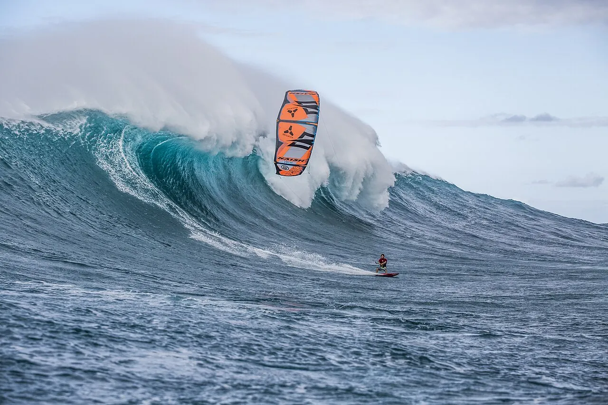

Peʻahi (Jaws)
Maui, Hawaï, États-Unis · surf

Vague géante qui déferle au pied des falaises du nord de Maui. Le temple du surf tracté et à la rame.
- Lieu
- Maui, Hawaï, États-Unis
- Niveau
- Expert
- Activités
- surf
- Type d'eau
- Mer / océan
- Coordonnées
- 20.94, -156.30 (position approximative du secteur)
Dangers à connaître
- Vagues de plus de 15 mètres.
- Secours spécialisés nécessaires.
Le conseil d'Ocean Buddy
Un spot à contempler depuis la falaise : réservé à une poignée de spécialistes.
Ouvrir dans Ocean Buddy Télécharger sur l'App Store
Source : Fiche Ocean Buddy · septembre 2026 · à vérifier localement.